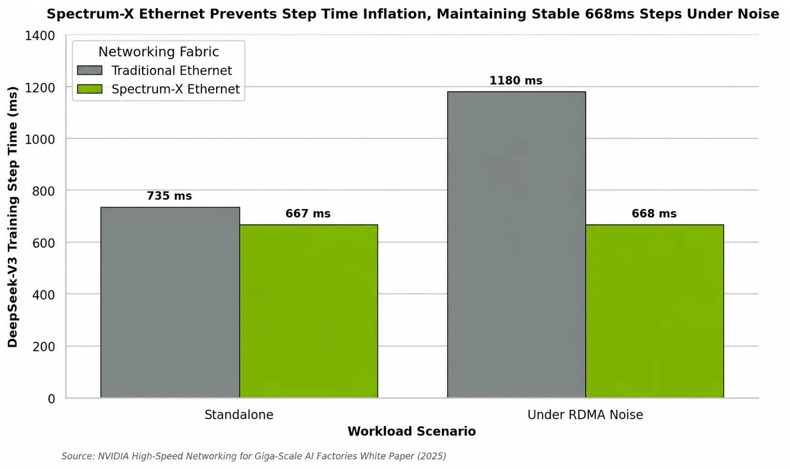
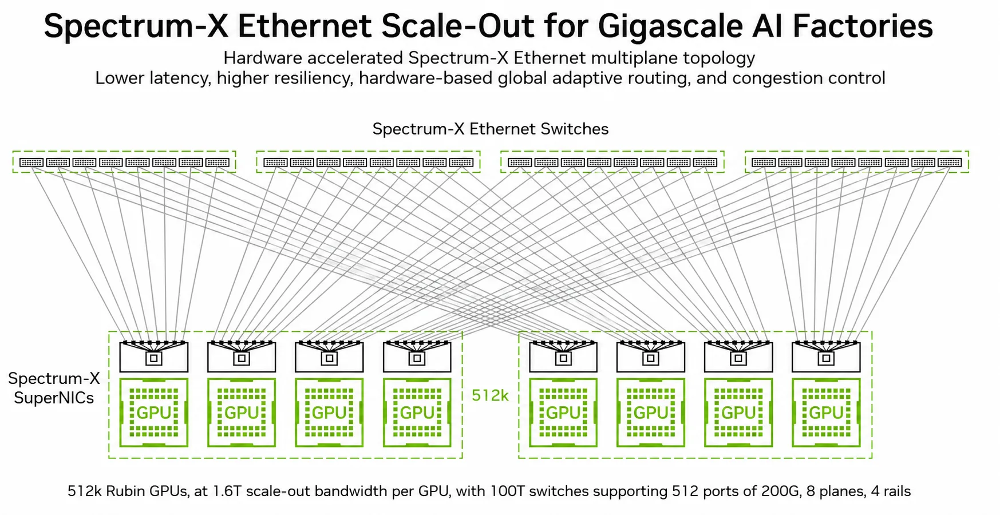
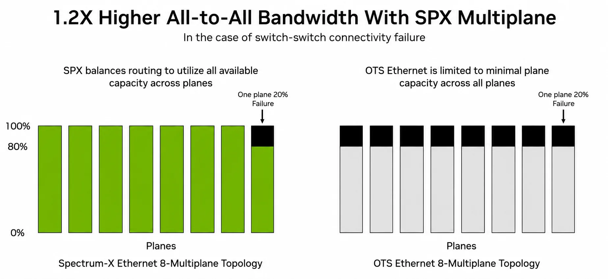
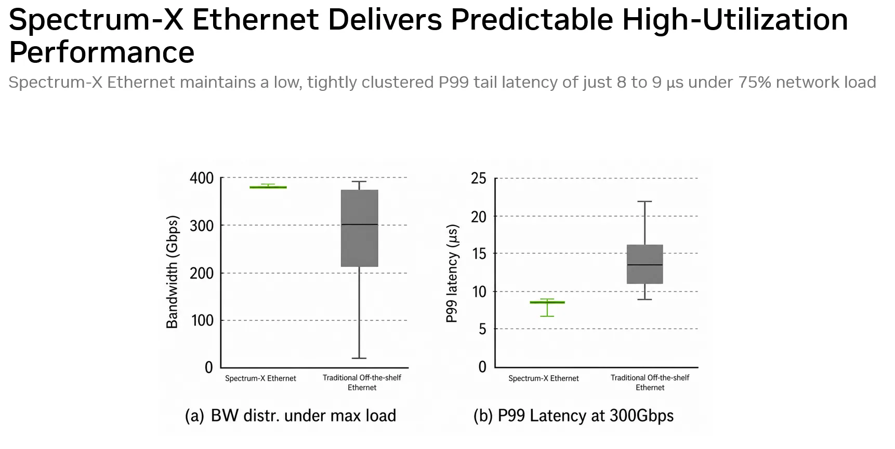
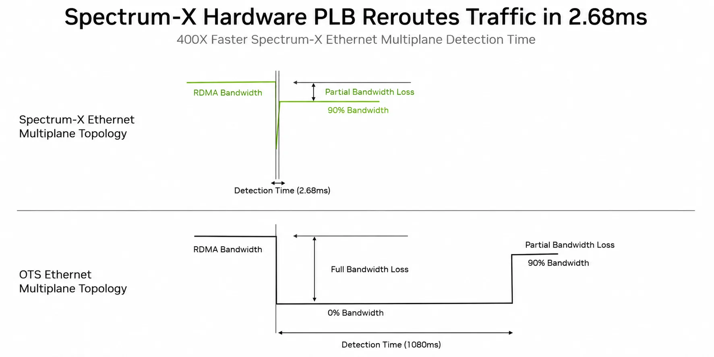

当训练扩到几十万颗GPU,机房真正的瓶颈往往不再是单卡,而是把它们连起来的网。这篇NVIDIA技术长文把矛头对准长久以来『免费又管用』的传统以太网,讲清它为什么在AI负载面前撞物理墙,以及Spectrum-X Ethernet如何用『交换机+SuperNIC一起设计』与三套硬件控制环把规则重写。
全文为厂商第一人称技术博客(标注作者Scot Schultz)直出HTML,含5张正文测算图(隔离/拓扑/韧性/负载/failover)+可参照的硬数据;编译按图文100% 保真处理,数据以原文白皮书口径为准。
生成式AI的爆发把机房的注意焦点从算力挪到网线上：规模越大，连接几十万颗GPU的scale-out网络越逼近一阶瓶颈。NVIDIA用这篇官方长文正面回答一个尖锐问题：为什么『拿来就用的传统以太网』在AI负载面前失灵，以及它拿什么重写这套规则。注意它是厂商技术博客，宣传口径下数据都由NVIDIA/合作研究者测产或高保真仿真得出，阅读时留意『谁测的、在什么条件下』。
当分布式训练扩到横跨几十万GPU，串起这些节点的scale-out网络就成为一阶性能瓶颈。传统现成以太网统治企业/云数据中心几十年：便宜、标准化、擅长高熵网页流量；可被AI那种『极大规模、高度同步、突发聚集』的通信模式逼到物理墙。NVIDIA的答案是Spectrum-X Ethernet：一套从架构起就为gigascale AI工厂设计的硬件加速网络：把高性能交换机与主机侧网卡(SuperNIC)一起设计，在极端负载下交付可预测低延迟、高fabric利用率与稳健韧性。全文拆：传统以太为何不适合 → Spectrum-X的架构原则 → Spectrum-X Multiplane如何最大化bisection带宽、缩短Time-to-AI。
标准数据中心流量是高熵的：海量小、独立、朝不同方向的流。ECMP靠静态hash把它们摊到并行路径上，大体平衡。AI训练流量是低熵的：GPU借All-Reduce/All-Gather/All-to-All不断同步，形成『少量、很大、同步』的流：正好戳穿传统以太三个死穴：①hash碰撞与straggler：ECMP不看实时拥塞，大象流可能挤上同一条链路而别的闲置；而同步集合要等最慢那条流才算完，一条拥塞就能拖住整次集合、让一堆GPU空转。②有损vs无损：拥塞溢出交换缓冲→丢包重传，极伤AI;RoCEv2常开PFC减损，但pause帧会传播拥塞、制造队头阻塞、甚至把fabric卡死。③慢拥塞控制：像DCQCN这类协议对同步突刺很难调;反应延迟或过度都会引发缓冲积压、利用率降、延迟尖峰。
还有第④条多租户近乎完美隔离：传统以太里，『吵闹邻居』会串到别人任务,让All-to-All集合带宽崩掉80% 以上。这个失败在DeepSeek-V3 LLM训练仿真里被实测：单独跑,标准以太step time 735 ms;一加背景噪音流量就膨到1.18 s(1.6× 慢)。Spectrum-X则按plane隔离拥塞、绕热点动态路由，在同一组多租户高拥塞下step稳在668 ms≈零劣化。

在800 Gbps及以上，传播延迟被光速钉死，但带宽-延迟积大得吓人。要避免缓冲积压与丢包,fabric必须微秒级、实时反应拥塞。软件控制路径做不到这个窄窗口,于是Spectrum-X把『全硬件加速』当结构要求。它的根本设计是把控制环按作用域/信号/职责切开：三段互不干扰,让拥塞在它自然的时间尺度上被解决,而不会制造使网络失稳的反馈环。
①交换机内自适应路由(AR)。与传统静态hash ECMP相反,Spectrum-X交换机做逐包自适应路由:用Join-Shortest-Queue(JSQ)的量化硬件近似,在亚微秒间隔采样ECMP组里每条出口端口的队列深度;包一到,就把它动态导向最不拥塞的物理口。这个无状态、flow-agnostic的机制在几百ns内对瞬时局部失衡作出反应,让交换队列保持小、热点难成形。
②目标性拥塞控制(CC)。AR均衡了fabric内的路径利用率,却治不了endpoint incast(多个发送端同时打向单个接收端、灌满其出口)。于是Spectrum-X实现高级硬件加速CC：关键在它把交换机与SuperNIC一起调:交换机只在自适应路由能力被彻底耗尽、队列还在涨时才打ECN标记;发送端用精确实时RTT探针+ECN在RTT时间尺度调速率。这样既不会对AR轻松摆平的那些微突发过度反应,又能在出现真正的端级拥塞时快速精确降速。
③卡上的Plane Load Balancing(PLB,后详)。它工作在主机边缘:SuperNIC(如ConnectX)里一块专属硬件引擎,用本地队列反馈+逐plane端到端拥塞遥测,把包跨多条网络平面做动态分配。
要把AI工厂扩到几十万GPU,传统网要加层(如2层→3层fat tree)。但加层级代价大:延迟升、抖动增、负载不均、光纤/线缆/供电成本爆表。于是现代AI数据中心用Multiplane拓扑:不造一张巨大多层单网,而把单台主机的巨大带宽(例如8-lane ConnectX SuperNIC的800 Gbps)拆成多条低速、物理独立的网络plane(如四条200 Gbps plane),每条各建成浅的2层fat tree,效率极高。
主机通过这些plane的连接靠无源光器件(如shuffle-box/trunk cable)在主机边缘完成:它们把多口网卡的光纤路由到所有独立plane,在主机边缘暴露巨大路径多样性,同时保持网卡到网卡完整可达。于是一张简单2层拓扑就能扩到12.8万+ 端点、3层可到1600万,却不引入传统多层fabric的延迟/抖动瓶颈。
无感知喷洒的坑:Multiplane拓扑带宽再大,只有流量均匀摊到所有plane才有效。常见替代是无感知喷洒(oblivious spraying):传输层把包轮流摊到各plane,毫无plane状况可见性。这在真实世界必崩：giga规模下光纤退化、连接器老化、链路flap是常态;若Plane 2一条光链路退化/flap,其容量下降,无感知喷洒却看不见这种不对称、继续等量往坏plane灌,整网被最慢那条plane拖死：一处局域flap的爆炸半径被放大成整个multiply-plane集群。
解法:Spectrum-X Multiplane技术。为解锁multiply-plane的真正潜力,它在SuperNIC硅里落一块硬件加速Plane Load Balancer(PLB),让multiply-plane架构对应用层完全透明:OS与集合通信库只见一个统一RoCE设备;一切流量分配、负载均衡、失效failover全由硬件完成。

PLB与交换协同,每个发出的包都经独特的有状态两段式层级选择:①端到端拥塞过滤：对每个目标GPU,SuperNIC为每条物理plane维护独立有状态CC上下文,各自看RTT探针/CNP算该plane实时速率余量;发包前比对所需速率与各plane余量,任何在端到端拥塞或链路失效的plane先被暂时滤出候选集。②本地队列选择：在余下健康、不拥塞的plane中,硬件选本地出口队列最浅的那条:这正好在主机边缘复刻了交换机的自适应路由。
把CC按plane分离、再接本地egress队列深度,Spectrum-X把拥塞隔到受影响的plane上。若Plane 2链路失效,Connect-X SuperNIC立刻察觉RTT超时,把它从候选集屏蔽,并在3ms内透明地把流量重引到剩下三条健康plane：保住75% 整网bisection带宽。
为验证这套架构,NVIDIA与研究者在产能级集群与高保真仿真上严格评测,结果把Spectrum-X与现成以太的差距摊得很开。①Multiplane韧性:当一张8-plane网络里某一条plane上发生局部20% switch-to-switch断连,传统multiply-plane Ethernet立刻成为瓶颈：它靠无感知负载均衡,整网每一条plane的性能都塌到与坏plane相同,全体被限到80% 容量。Spectrum-X Multiplane却用有状态PLB动态绕开局部瓶颈:七条健康plane跑满100%,只有坏的那条降到80%。因为用满所有健康容量而不沉到最低公共线,失效时整网All-to-All集合带宽高1.2×：给出优雅的、与容量成比例的劣化,让大训练不中断。

②高利用率下的可预测表现:在最坏RDMA bisection基准下,传统以太的静态ECMP因flow-hash碰撞崩塌,某些GPU对吞吐跌到25 Gbps;Spectrum-X(AR+PLB)给出紧凑可预测的带宽分布,在全部GPU对上维持98% 理论线速。抖动上:传统以太99分位(P99)尾延迟到22 μs,而Spectrum-X在75% 网络负载下P99尾延迟只是低而紧的8-9 μs。

③无缝失效韧性:当host-to-leaf一条链路flap,传统以太基于软件/未硬件加速的负载均衡要1.08秒以上才能恢复重路由：造成让GPU集合冻结的巨停。Spectrum-X的硬件PLB只花2.68 ms完成检测+切换。这400× 的提速把瞬时故障透明吸收、不打断进行中的LLM训练步骤。

④比例劣化,写进设计约束:链路失效不可避免,关键是它的性能影响应正比于物理连通损失。但一条路径上多处故障会重挫很多源-目的对;传统以太在光缆故障/链路flap下就走不成比例：丢掉10% 叶上行链路就能让集合带宽因路由不对称崩掉50% 以上。Spectrum-X严格按容量比例劣化:10% fabric失效时,带宽只掉11%(≈比例)、尾延迟只升7%,接近理想。这保证运营商在物理基建还没全修好时就能按近最优效率跑训练,把Time-to-AI大幅压低。
从通用云计算转向gigascale生成式AI,是一次网络需求的根本迁移。传统现成以太建立在『高熵流量、静态路由、软件控制拥塞环』的假设上,先天够不着同步AI集合要求的微秒级、零抖动。Spectrum-X借解耦并硬件加速关键控制环(网内自适应路由+传输层目标CC+主机边缘PLB),交付giga级AI要的可预测稳定超低延迟;Multiplane又给一张强韧、可见的网络骨架,简化扩集群、护多租户、压Time-to-AI。对任何正在建AI工厂的组织:它不只是性能优化,是架构必需。
正文图注与AI-Generated Summary均出自NVIDIA发布内容;引文检索见官方图纸(NSX大尺度网络仿真、DeepSeek-V3报告、Meta RDMA over Ethernet等已在原页References)。厂商数据由NVIDIA/研究者集群与仿真测得，独立复现请对照其白皮书实验条件。
参考：https://developer.nvidia.com/blog/giga-scale-ai-ethernet-evolution-spectrum-x-ethernet-rewrites-rules/